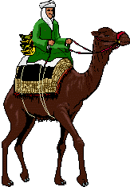

Puzzle 15: Bananentransport in der Wüste
Abdullah steht im Hafen von Kashaba mit 300 Bananen. Er soll seinem Scheich, der im 100 km weiter entfernten
Lumbubu lebt, möglichst viele dieser Bananen mitbringen. Abdullah's Kamel kann maximal 100 Bananen auf
einmal tragen. Da die Bewältigung der Strecke sehr mühsam ist, isst das Kamel nach jedem zurückgelegten Kilometer
eine Banane. Suchen Sie einen Weg, damit Abdullah's Scheich möglichst viele Bananen erhält!
Hinweis: Abdullah kann natürlich den Weg in Etappen einteilen und Zwischenlager einrichten.
Es sind nur ganze Zahlen für die jeweilige Anzahl der Bananen erlaubt.
10. Juli 2001